混合 SNN-CNN 全数字 SRAM 存内计算零基础精讲：一个宏，装下两种神经网络 A 16nm, 1Mb, 1-to-8b-Configurable 444.21 TOPS/W Fully Digital SRAM Compute-In-Memory Macro for Hybrid SNN-CNN Edge Computing（ISSCC 2026 · Paper 30.8）
神经网络有两种主流形态：CNN（卷积网络，精度高但费电）和 SNN（脉冲网络，事件驱动、超省电但精度略低）。真实边缘应用往往需要混合 SNN-CNN 模型——部分层用 SNN、部分层用 CNN。传统硬件要么做两套计算电路（面积翻倍），要么只支持一种。
这篇来自清华+工研院的工作，在 16nm FinFET 工艺上造了一个 1Mb 全数字 SRAM 存内计算（SRAM-DCIM）宏，用一套共享的 MAC 电路同时支持 SNN 和 CNN，并支持 1-to-8b 可配置精度：SNN 模式实测 444.21 TOPS/W（1b 输入 × 8b 权重 × 14b 输出），CNN 模式 62.84 TOPS/W（8b×8b×22b）。这被认为是首个硅验证的、支持多比特混合 SNN-CNN 的纯数字 SRAM-CIM 宏。
- SNN 的输入是“1 还是 0”：SNN 的输入/输出是脉冲（spike），本质上就是 1bit。没有脉冲 = 没有计算 = 不耗动态功耗。所以 SNN 模式能效高得惊人（444 TOPS/W）——不是电路更快，而是大部分时间在“偷懒”。
- 膜电位（Membrane Potential, MP）是 SNN 的“记忆”：每个神经元内部有一个累积器（膜电位），输入脉冲不断往里面加，加到阈值就“发放”（输出一个脉冲）并清零。这个“累积-比较-发放”就是 MPDB（膜电位动力学）单元干的事。
- 混合模型 = 两种数据流：SNN 层输出脉冲（1b），CNN 层输出特征值（8b）。硬件必须能在这两种“流量”之间切换，而且最好共用同一套乘法器——这就是本文 CMDM-LCC 单元的使命。
§0.1摘要逐句精读
| 原文（摘录） | 人话解释 |
|---|---|
| “SNNs have demonstrated superior energy efficiency in event-driven applications… while CNNs provide high accuracy… Hybrid SNN-CNN models have shown promise in balancing accuracy and compute energy” | SNN 省电（事件驱动），CNN 准确（图像/语音识别）。混合模型在两者之间取平衡——这是本论文的应用动机。 |
| “designing SRAM-DCIM macros supporting hybrid SNN-CNN introduces two key challenges: (1) extra hardware overhead for supporting both SNN and CNN… (2) area-energy trade-off between PSUM storage and weight update” | 两大挑战：① 同时支持两种网络 = 两套电路 = 面积开销大；② 数据怎么映射：PSUM（部分和）存得少就得频繁更新权重，权重复用得多 PSUM 就得存很多。 |
| “a compact fully-digital SNN-CNN reconfigurable computing (CFD-SC-RC) architecture that shares SNN-CNN MAC circuit” | 创新①：共享 MAC 电路的可重构架构（CFD-SC-RC），一套电路跑两种模式。 |
| “a PSUM storage–weight reuse optimized data mapping (PS-WR-ODM) scheme” | 创新②：PSUM 存储-权重复用折中的数据映射方案（PS-WR-ODM）。 |
| “444.21 TOPS/W with a 1bIN-8bW-14bOUT configuration in SNN mode, and 62.84 TOPS/W with an 8bIN-8bW-22bOUT configuration in CNN mode” | 实测：SNN 模式 444.21 TOPS/W、CNN 模式 62.84 TOPS/W（16nm）。 |
§0.2论文的核心贡献清单
- CFD-SC-RC 架构：跨模型共享 SNN-CNN MAC 电路，宏面积比“两套电路”方案节省 33%，能效提升 2.31×（相对前作混合方案 [4]）；
- CMDM-LCC 单元：单个本地计算单元内集成两个 MUX 乘法器 + INT8 翻转缩减器（TR）+ 移位相加（SaA），支持 SNN 位宽输入（BW-IN）与 CNN 字宽输入（WW-IN）双模式，以及 INT4/INT8 双模权重映射；
- DM-MPDBU 单元：数字多膜电位动力学单元，一套硬件支持 IF / LIF / IQIF 三种神经元模型（前作只支持 1 种），且不受工艺波动影响；
- PS-WR-ODM 数据映射：把时间步分组、块内权重复用，FoM1（能效/面积/延迟）比两种极端映射提升 >1.22×，综合 FoM2 提升 5.48×；
- 首个硅验证：16nm 流片，SNN 444.21 / CNN 62.84 TOPS/W，FoM3 最高提升 8.2×，1.3 ns 计算延迟（0.8V）。
完全零基础：按 01→09 顺序读，重点玩 3 个交互仿真、看 3 个视频，约 60 分钟。已经懂 CNN 的：从 §3（神经元模型）开始读，本文最精彩的是 §4（电路共享）和 §6（数据映射折中）。
§1背景：SNN 与 CNN，两种网络两种哲学
1.1 两类网络各有什么优劣
CNN（卷积神经网络）是目前最成熟、精度最高的视觉/语音模型（ResNet、MobileNet 等）。它的计算方式是稠密的：每一层的每个输出都要对所有输入做乘法累加（MAC），哪怕输入是 0 也要算一遍。精度高，但每个周期都在“全功率”运转，能效不理想。
SNN（脉冲神经网络）模仿生物神经元：输入输出都是离散脉冲（spike，0/1），神经元内部有一个膜电位累积器，攒到阈值才“发放”一个脉冲。它有两个诱人的特性：
- 事件驱动：没有脉冲进来 = 不做计算 = 动态功耗为零。实际事件数据（事件相机、音频事件）非常稀疏，SNN 的“平均活动率”极低 → 能效极高；
- 时序记忆：膜电位天然跨时间累积，适合时序/事件流任务（这正是“时间步 timestep”概念的来源，§6 会反复用到）。
代价是：SNN 训练难、峰值精度通常低于 CNN。
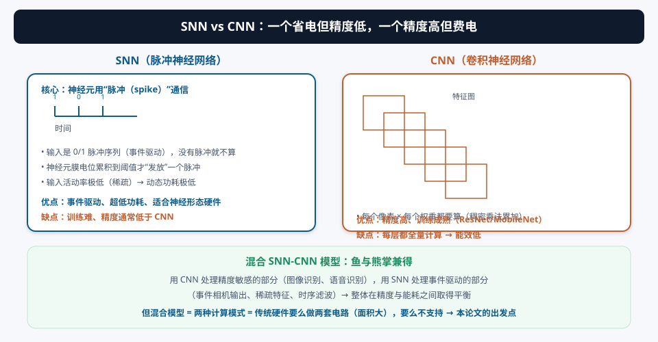
1.2 混合 SNN-CNN 模型：鱼与熊掌兼得
既然各有优劣，自然想到“混合”：模型前几层用 SNN 处理事件流（省电），后几层用 CNN 做精确分类（提精度），中间做一个“脉冲→值”转换。已有研究（如 Spiking-YOLO 等）证明这种混合模型在精度与能耗之间取得良好平衡，适合边缘推理。
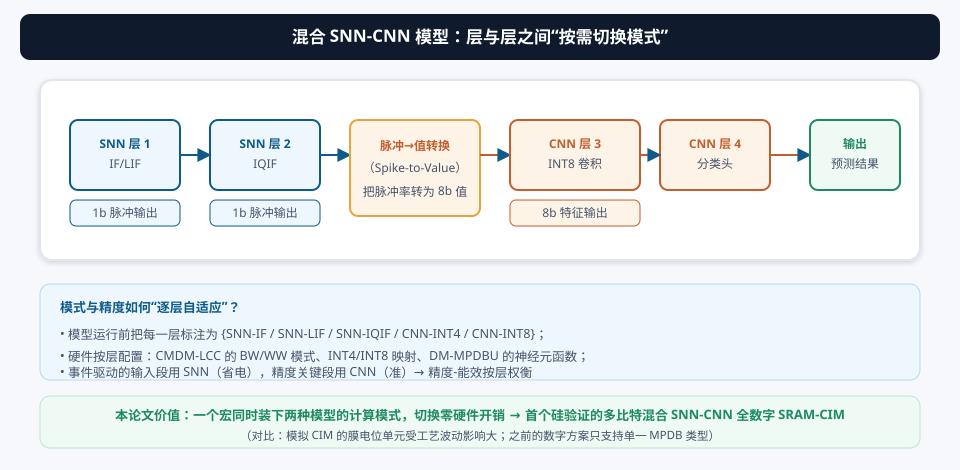
一个加速器要同时会两种“武功”：SNN 的位宽乘法（1b 输入 × 8b 权重）和 CNN 的字宽乘法（8b 输入 × 8b 权重），还要在层与层之间随时切换，并且能效都不能差。做两套电路最省事，但面积翻倍；做一套电路就要发明“双模式共享”的技巧——这正是本论文第一个创新的出发点（§4）。
§2为什么混合 SNN-CNN 需要专用 CIM 硬件
2.1 论文点名的两大挑战
论文 Fig. 30.8.1 用一张图总结了设计混合 SNN-CNN SRAM-CIM 宏的两大挑战（这也是全文的“问题定义”）：
支持 SNN 需要“位宽乘法 + 神经元动力学单元（MPDB）”，支持 CNN 需要“字宽乘法 + 加法树”。如果各做各的：面积直接翻倍。更糟的是，如果只做模拟 CIM，膜电位累积这类“模拟运算”会被工艺波动污染（见 §5.1）；而全数字虽然精度确定，但数字 MAC 本身也要消耗能量——所以既要共享电路（省面积），也要把数字计算做得省电（省能耗）。
SNN 有“时间步（timestep）”维度：同一个神经元要在 N 个时间步上不断累积膜电位。数据映射时有两个极端：
- 时间步优先（TS-first）：一个时间步内把所有输入算完 → 中间结果（PSUM）很快被消费，PSUM 存储小，但每换一个时间步都要重新加载权重 → 权重更新能耗高、延迟长；
- 权重复用优先：同一个输入在所有时间步上算 → 权重只读一次、复用 N 次 → 权重更新能耗低，但不同时间步的部分和要一直存着 → PSUM 缓冲巨大。
怎么在这两个极端之间找平衡，就是 §6 的创新③。
2.2 数字 CIM 还是模拟 CIM？——沿用“确定性”路线
本论文选择 SRAM 数字 CIM（SRAM-DCIM），理由与 10 号论文一脉相承：
| 维度 | SRAM 模拟 CIM（SRAM-ACIM） | SRAM 数字 CIM（SRAM-DCIM，本文） |
|---|---|---|
| MAC 精度 | 电流/电荷求和 + ADC，有量化与噪声误差 | 逐位精确，无 ADC |
| 神经元膜电位（MPDB） | 模拟积分受工艺波动（PVT）影响，发放时刻不可复现 | 数字积分 + 比较器，确定可复现 |
| 工艺缩放 / 低压 | 模拟精度随电压恶化 | 数字逻辑可低压运行 |
| 灵活性 | 模式切换复杂 | 模式=配置位，天然灵活 |
混合模型要求硬件在 SNN/CNN 两种模式间切换。在数字实现里，“模式”只是一个配置寄存器：乘法器是位宽还是字宽、MPDB 用 IF 还是 LIF、精度是 INT4 还是 INT8，全部由配置位决定——这是模拟电路很难做到的“即插即用”。论文摘要那句 “provides high tolerance to process variation” 说的就是数字 MPDB 的确定性。
论文原文引用的对比对象：模拟方案如 [8]（ΔΣ CIM，22nm，21.38 TOPS/W），数字方案如 [7]（INT12×INT12，3nm）。本文主打的是“数字 + 双模式 + 多比特”的组合，是第一个把这三者一起做到硅验证的工作。
§3SNN 神经元模型基础：膜电位、阈值与发放
3.1 膜电位：神经元的“记忆水桶”
理解本文的 DM-MPDBU（多膜电位动力学单元）之前，必须先理解 SNN 神经元的抽象模型。一个神经元每步做三件事：
- 积分（Integrate）：把这一步收到的输入脉冲加权求和，累加进“膜电位” MP[t]（Membrane Potential）；
- 判断（Fire?）：MP[t] 是否 ≥ 阈值 θ？是则输出一个脉冲（spike=1），并把 MP 清零（reset）；
- 动力学（Dynamics）：不同模型在这个“累积过程”里加入不同的修正（泄漏、非线性项）——这正是 IF/LIF/IQIF 的区别。
3.2 三种神经元模型：IF / LIF / IQIF
| 模型 | 核心差异 | 适用场景 |
|---|---|---|
| IF（Integrate-and-Fire） | 最简单的“纯积分”：只加不减，撞阈值就发放清零 | 简单脉冲生成，省硬件 |
| LIF（Leaky IF） | 每一步先“泄漏”一点（MP 减去泄漏量）再积分：没有输入时 MP 缓慢衰减 | 滤除时间噪声（防伪脉冲触发） |
| IQIF（Integer Quadratic IF） | 积分时叠加一个“整数二次项”IQ，让 MP 轨迹非线性（靠近阈值加速/减速） | 精度要求更高的任务 |
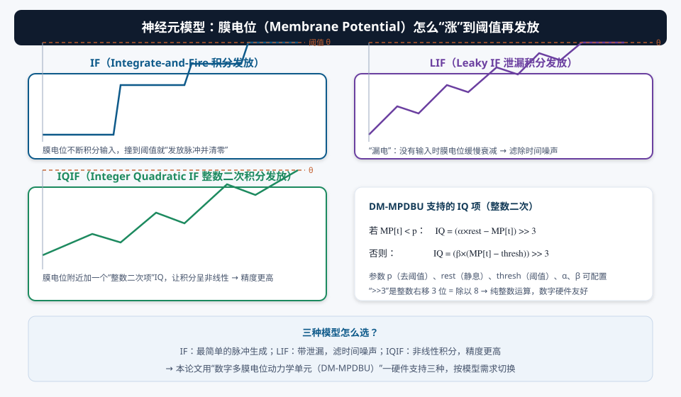
论文中 DM-MPDBU 实现的 IQIF 具体公式（全部是整数运算，硬件友好）：
否则： IQ = (β×(MP[t] − thresh)) >> 3式 3.2
其中 pdeth（de-threshold，去阈值）、rest（静息电位）、thresh（阈值）、α、β 都是可配置参数；“>>3”是整数右移 3 位 = 除以 8，避免了小数运算——这就是“Integer”（整数）二字的由来。当 MP 较低时（< pdeth），IQ 让 MP 缓慢爬升；MP 较高时，IQ 让 MP 更快逼近阈值——形成非线性加速。
不同 SNN 模型用不同神经元动力学：简单任务 IF 就够，噪声环境要 LIF，精度敏感任务要 IQIF。如果硬件只支持一种（前作 [4] 就是），模型设计师就被绑死了。DM-MPDBU 用一套数字电路 + 配置位同时支持三种 → “通用 SNN 硬件”的底气。
3.3 交互演示 A：亲手调神经元参数，看膜电位怎么涨
3.4 视频演示：三种神经元的膜电位动画
§4创新①：CFD-SC-RC 架构与 CMDM-LCC 双模式计算单元
4.1 问题：两套电路 vs 一套电路
SNN 的 MAC 是“1b 输入 × 8b 权重”的位宽乘法（bit-wise, BW），CNN 的 MAC 是“8b 输入 × 8b 权重”的字宽乘法（word-wise, WW）。二者数据通路不同。最直接的做法是各做一套乘法器 + 各自的累加逻辑——但面积翻倍，边缘芯片承担不起。
本论文的 CFD-SC-RC（Compact Fully-Digital SNN-CNN Reconfigurable Computing，紧凑型全数字 SNN-CNN 可重构计算）架构，核心思想是：让同一套 MAC 硬件在两种模式下工作。实现这个“双重人格”的关键零件，是每个可重构推理块（RIB）里的 CMDM-LCC（Cross-Model Dual-Mode Local Computing Cell，跨模型双模式本地计算单元）。
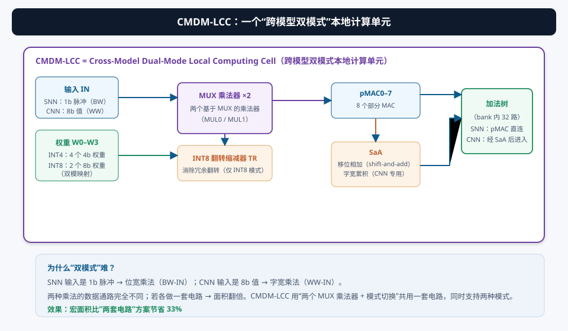
4.2 CMDM-LCC 的双模式结构
每个 CMDM-LCC 包含：
- 两个基于 MUX 的乘法器（MUL0/MUL1）：MUX 乘法器 = 用选择器阵列实现的乘法，比全加器阵列更紧凑，适合位宽可变的场景。同一对 MUL 在 SNN 模式下做“1b×8b 位宽乘法”，在 CNN 模式下做“8b×8b 字宽乘法”；
- INT8 翻转缩减器（Toggle Reducer, TR）：INT8 模式下消除冗余的信号翻转（见 4.3），降低动态功耗；
- 移位相加（Shift-and-Add, SaA）：CNN 模式下把 8b 输入按位/按字拆分的部分积做字宽累积（WW-accumulation）；SNN 模式不需要，pMAC 直接进加法树。
每个 CMDM-LCC 每周期输出 pMAC0–7 共 8 个部分 MAC。数据流走向（图 4.1 底部）：
CNN 模式：pMAC0–7 → SaA（字宽累积）→ 加法树式 4.1
4.3 INT4/INT8 双模权重映射：4 个槽的两种玩法
每个 CMDM-LCC 有 4 个权重输入槽 W0–W3（来自 SRAM 阵列）。这 4 个槽怎么用，取决于精度模式：
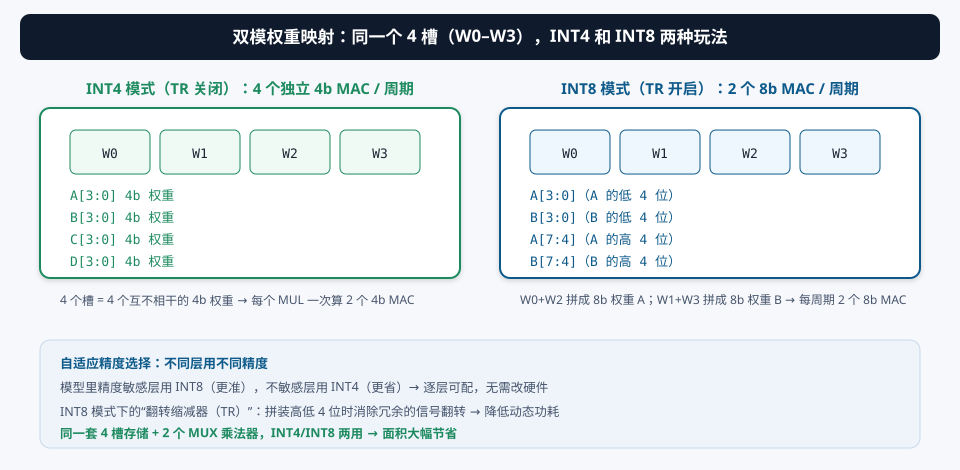
- INT4 模式（TR 关闭）：W0–W1 映射为两个 4b 权重 A[3:0]、B[3:0]，W2–W3 映射为 C[3:0]、D[3:0] → 每周期 4 个独立的 4b×4b MAC。适合精度不敏感的层（更省）；
- INT8 模式（TR 开启）：W0–W1 是 A[7:0]、B[7:0] 的低 4 位，W2–W3 是它们的高 4 位 → 每周期 2 个 8b×8b MAC（两个 MUL 各做一个）。适合精度敏感层（更准）。
INT8 模式下，8b 权重被拆成“低 4 位 + 高 4 位”存在两个槽里。计算时要把两半拼起来，拼接过程会产生大量冗余的信号翻转（比如低半部分的位在两次使用之间反复跳变）。TR 的作用就是在数据进入 MUX 乘法器之前，把这种“注定要被丢弃/合并”的翻转消掉——CMOS 动态功耗 ∝ 翻转次数，消掉冗余翻转就直接省功耗。
这种“逐层自适应精度选择”是论文卖点之一：模型的不同层可以分别标注 INT4 或 INT8，硬件按层配置，不需要重编译、不需要改电路。
4.4 交互演示 B：同一个 4 槽，INT4 和 INT8 两种玩法
§5创新②：DM-MPDBU —— 数字“多膜电位动力学”单元
5.1 为什么神经元单元必须是“数字”的
SNN 的最后一环是膜电位动力学（MPDB, Membrane Potential Dynamics Behavior）：把加法树算出的“输入总和”累积进膜电位、比较阈值、决定是否发放。这个功能模拟电路也能做（用电容积分、比较器判阈值），但有一个致命问题：
电容充电速率、比较器失调都随工艺角（PVT）漂移。同一批芯片、同一个模型、同样的输入，A 芯片的神经元在“第 3 个时间步”发放，B 芯片可能在“第 5 个时间步”才发放——SNN 的时序行为完全不可复现。对于要部署到成千上万台设备上的推理系统，这是不能接受的。
本论文的 DM-MPDBU（Digital Multi-Membrane-Potential-Dynamics-Behavior Unit）用纯数字实现：累加器 + 比较器 + 移位器（>>3）完成全部动力学 → 逐位确定、可复现、可低压。这也再次呼应“数字 CiM 的确定性精度”这一主线。
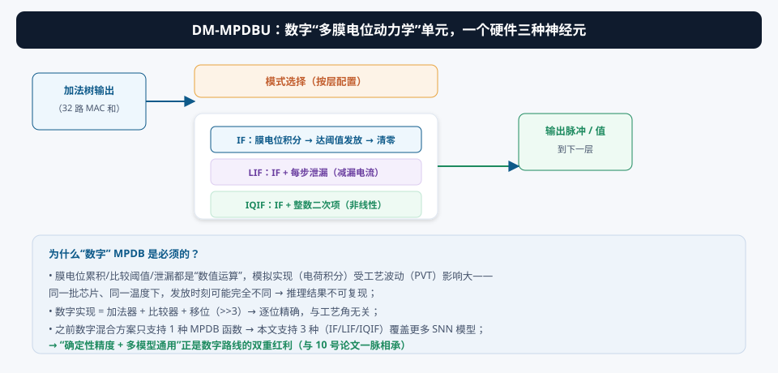
5.2 三种模型，一套硬件：可配置的动力学
前作 [4] 的数字混合方案只支持一种 MPDB 函数，模型设计被锁死。DM-MPDBU 把三种动力学做成“配置位切换”：
| 模式 | 每步运算 | 硬件开销 |
|---|---|---|
| IF | MP ← MP + Σ输入；if MP ≥ θ: 发放, MP=0 | 累加器 + 比较器（最简） |
| LIF | MP ← max(0, MP − leak) + Σ输入；if MP ≥ θ: 发放, MP=0 | IF + 减法器 |
| IQIF | 按式 3.2 计算 IQ（移位+乘加），MP ← MP + IQ + Σ输入；if MP ≥ θ: 发放, MP=0 | IF + 移位器 + 小乘法 |
三种动力学本质都是 MP ← 修正(MP) + 输入，区别只在“修正函数”是 0（IF）、常数泄漏（LIF）、还是分段线性/二次（IQIF）。数字实现里，这些修正只是多几个可选的加法/移位路径——用多路选择器按配置位选通即可。这是“数字可重构”最典型的好处。
论文强调，DM-MPDBU 让本宏支持“通用边缘 SNN 操作”：IF 负责简单发放、LIF 负责时间噪声滤波、IQIF 负责高精度非线性积分。配合 §4 的 CMDM-LCC，一个 bank 就能按层配置“CNN-INT8 / CNN-INT4 / SNN-IF / SNN-LIF / SNN-IQIF”五种组合。
① 如果膜电位累积不设上限会怎样？（提示：MP 位宽要够，否则溢出——论文用 14b/22b 输出累加器就是干这个的。）② LIF 的泄漏量是固定常数还是可配置参数？③ IQIF 的 “>>3” 为什么能代替除以 8？整数右移对负数成立吗？（提示：算术右移 vs 逻辑右移。）
§6创新③：PS-WR-ODM —— PSUM 存储与权重复用的数据映射折中
6.1 先搞懂 SNN 的“时间步”维度和两个极端
SNN 的处理对象是“一段时间的脉冲流”。网络把时间切成一个个时间步（timestep, TS）：每个 TS 输入一批脉冲，神经元膜电位跨 TS 累积。所以数据有三个维度要遍历：输入神经元（IN0…INK）、时间步（TS0…TSN）、权重。先访问谁，直接决定两类开销：
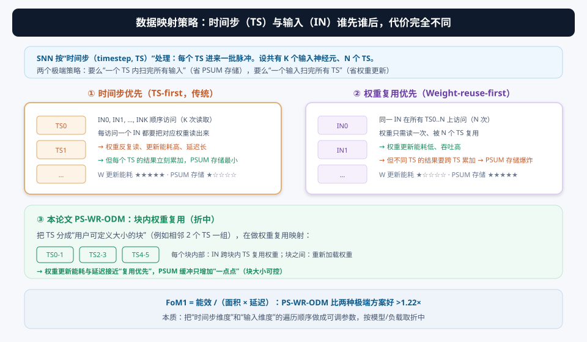
| 策略 | 遍历顺序 | 权重更新能耗 | PSUM 存储 | 延迟 |
|---|---|---|---|---|
| TS-first（传统） | 一个 TS 内扫完所有 IN → 下一个 TS | 高（每 TS 重载权重） | 小（PSUM 立刻被消费） | 长（权重加载串行） |
| 复用-first（前作 [10]） | 一个 IN 跨所有 TS 算完 → 下一个 IN | 低（权重只读一次） | 巨大（跨 TS 的部分和全要存） | 短（吞吐高） |
| PS-WR-ODM（本文） | TS 分组（如 2 个一组），块内复用 | 中低 | 中（只有块大小那么多） | 短 |
6.2 块内权重复用：把“折中”做成参数
PS-WR-ODM（PSUM Storage–Weight Reuse Optimized Data Mapping，PSUM 存储-权重复用优化数据映射）的做法：
- 把 N 个时间步分成若干块（block），块大小是用户可定义的参数（例如相邻 2 个 TS 一组，也可以更大）；
- 块内采用“权重复用”顺序：同一输入 IN 在块内各 TS 上访问，权重只读一次被块内复用；
- 块间重新加载权重，进入下一个块。
把参数列出来就看清楚了：
- 块大小 = 1（每个 TS 单独一块）→ 退化成 TS-first（PSUM 最小、权重能耗最大）；
- 块大小 = N（所有 TS 一块）→ 退化成复用-first（权重能耗最小、PSUM 最大）；
- 块大小 = B（折中）→ 权重能耗降到 ~1/B，而 PSUM 缓冲只增加 B 份——用可控的 PSUM 开销换取权重更新能耗的大幅下降。
论文用 FoM1 = 能效 /（面积 × 延迟）衡量：PS-WR-ODM 比两个极端都好 >1.22×。
6.3 交互演示 C：三个方案的代价对比
6.4 视频演示：三种映射的时序对比
① 块大小是不是越大越好？提示：PSUM 缓冲的“边际收益递减”。② 这个映射优化对 CNN 模式还成立吗？（提示：CNN 没有时间步维度，TS 维度退化为 1。）③ “用户可定义块大小”意味着硬件要提供什么？（提示：一个可编程的调度寄存器，决定一次复用跨越几个 TS。）
§7系统架构与数据流：1Mb 宏怎么把两种模型跑起来
7.1 1Mb 宏架构总览
整个宏 = 16 个 64kb bank（共 1Mb），每个 bank 内部结构完全一样：
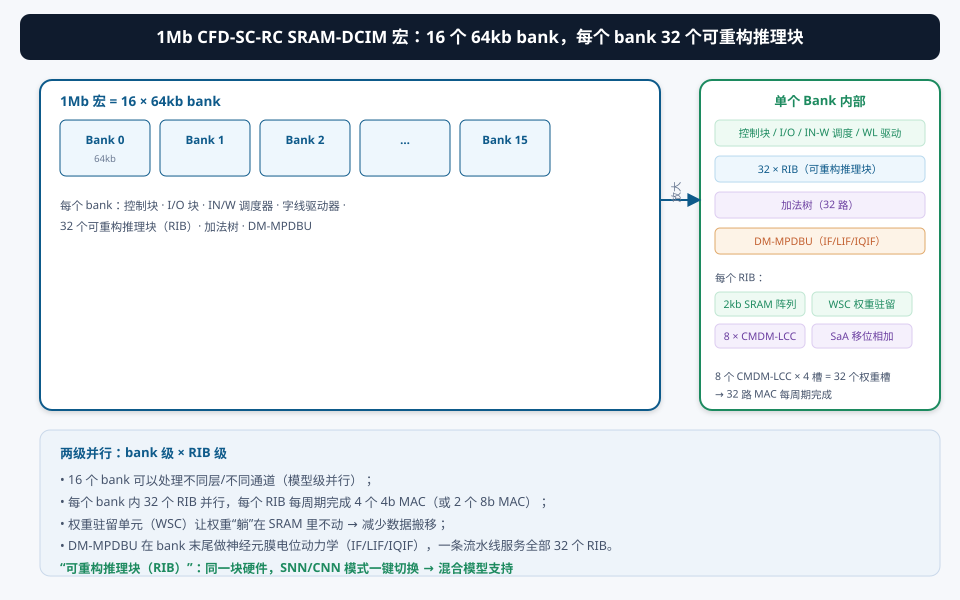
- RIB（可重构推理块）：每个 RIB 内有 2kb SRAM 阵列（存权重）+ 权重驻留单元 WSC（Weight Stationary Cell，让权重“躺”着不动）+ 8 个 CMDM-LCC（§4 的双模式计算单元）+ SaA；
- 32 个 RIB：每个 RIB 的 8 个 CMDM-LCC × 每单元 4 个权重槽 = 32 个权重槽 → 每周期 32 路 MAC；
- 加法树：把 32 路 MAC 的部分和相加；
- DM-MPDBU：bank 级共享的神经元动力学单元（§5），处理 SNN 模式；
- 控制块 / I-O 块 / IN-W 调度器 / 字线驱动器：输入输出、模式配置、数据映射调度（§6）的“大脑”。
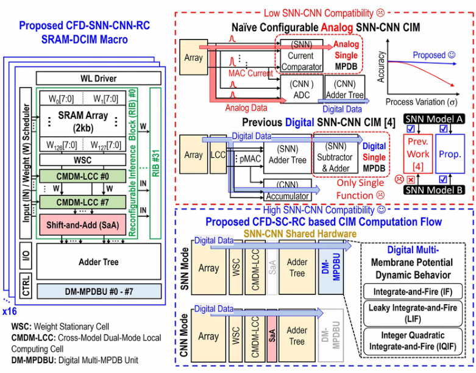
7.2 SNN / CNN 两条数据流
同一套硬件，两条数据流，由“模式配置”切换（详见 §4.2 的式 4.1）：
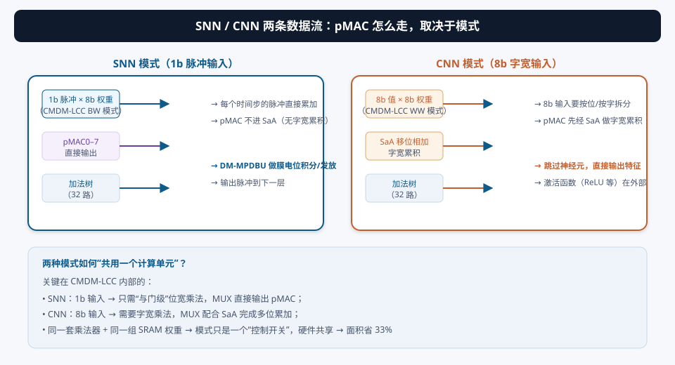
- SNN 数据流：脉冲输入（1b）→ CMDM-LCC 位宽乘法 → pMAC0–7 直通 → 加法树（32 路）→ DM-MPDBU 膜电位积分 → 输出脉冲到下一层。每个时间步的脉冲在膜电位里“滚雪球”；
- CNN 数据流：8b 特征输入 → CMDM-LCC 字宽乘法（TR 开启）→ pMAC 经 SaA 做字宽累积 → 加法树 → 直接输出 8b 特征（激活函数在外部）。
关键在 CMDM-LCC 内部的两个 MUX 乘法器：SNN 的 1b×8b 只是 CNN 的 8b×8b 的一个特例（输入只有 1 位有效）。MUX 乘法器天然支持“位宽可变”，加上 SaA 可旁路（SNN 模式不启用），两条数据流就能在同一组物理电路上分时复用。模式切换 = 改配置寄存器，零面积开销。这就是“可重构计算（RC）”的含义。
7.3 视频演示：双模式数据流
① 16 个 bank 之间如何分工？提示：可以按输出通道划分，也可以按层划分——这是软件调度的事，宏只提供 bank 级并行。② 为什么每个 RIB 只要 2kb SRAM？权重驻留单元（WSC）意味着什么？（提示：一次推理中权重尽量不出阵列 → 省数据搬移。）③ 如果 CNN 层之间要跑“残差连接”，宏需要额外支持什么？
§8实测与对比：16nm 芯片的成绩单
8.1 两个模式的能效
16nm FinFET 流片，两种模式的实测能效：
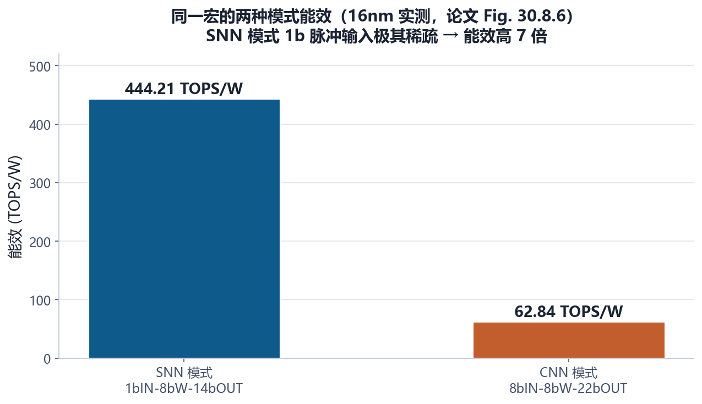
动态功耗 ∝ 翻转活动率。CNN 模式每个周期都是“满血”的 8b×8b 稠密计算；SNN 模式输入是 1b 脉冲，且大部分时间步大部分神经元没有脉冲——输入为 0 时乘法器几乎不翻转、加法树大部分为空转。444 vs 62.84 的差距，本质就是“稀疏事件驱动”的红利。（这也解释了为什么标题强调“1-to-8b 可配置”：位宽越低越省，但要能按需切回高精度。）
8.2 FoM 收益：三把尺子量设计
论文用了三个 Figure of Merit（FoM）从不同角度量化收益：
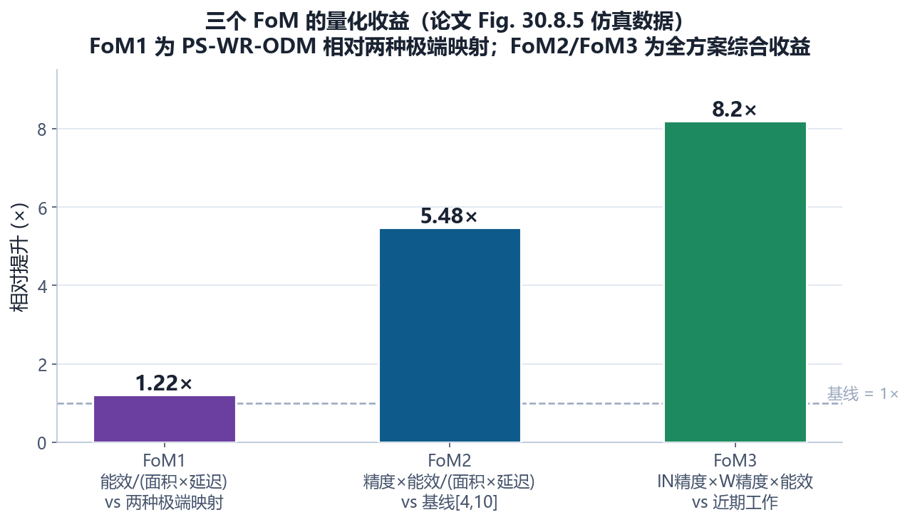
| 指标 | 定义 | 相对什么提升 | 数值 |
|---|---|---|---|
| FoM1 | 能效 /（面积 × 延迟） | PS-WR-ODM vs TS-first 与复用-first | >1.22× |
| FoM2 | 精度 × 能效 /（面积 × 延迟） | 三项技术组合 vs 基线 [4][10] | 5.48× |
| FoM3 | 输入精度 × 权重精度 × 能效 | 本宏 vs 近期工作 | 最高 8.2× |
另外：CFD-SC-RC（电路共享）单独贡献 面积 −33%、能效 2.31×（相对前作混合方案 [4]），见下图：
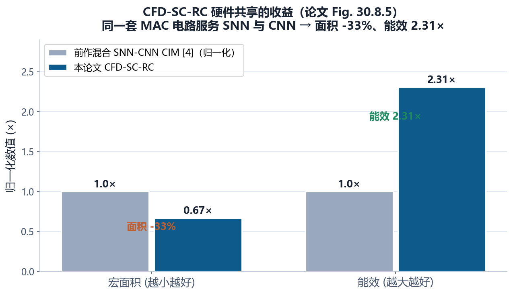
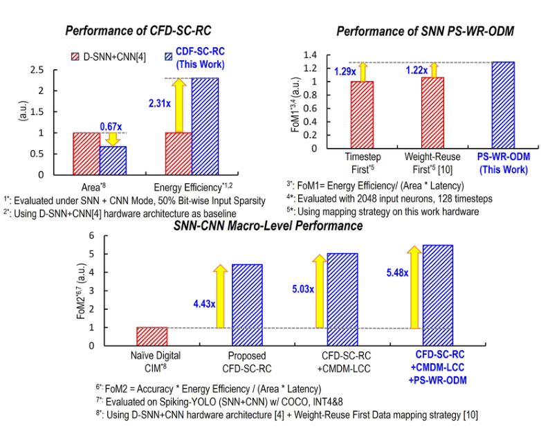
8.3 实测细节与对比
- 计算延迟：Shmoo 图确认 1.3 ns（0.8V，8bIN-8bW-22bOUT 配置）——一个 MAC 周期不到 1.3 ns，16nm 数字路径足够快；
- 工艺：16nm FinFET CMOS（台积电代工路线，作者来自清华+工研院）；
- 对比对象：模拟 SNN-CIM 如 [11]（时域计算 701.7 TOPS/W）虽然能效指标更高，但本文是数字 + 混合模式 + 多比特；[12]（NeuC-CIM 1.3pJ/SOP）是电荷域模拟方案，同样有精度可复现问题；本文的定位是“数字确定性与混合灵活性”的组合。
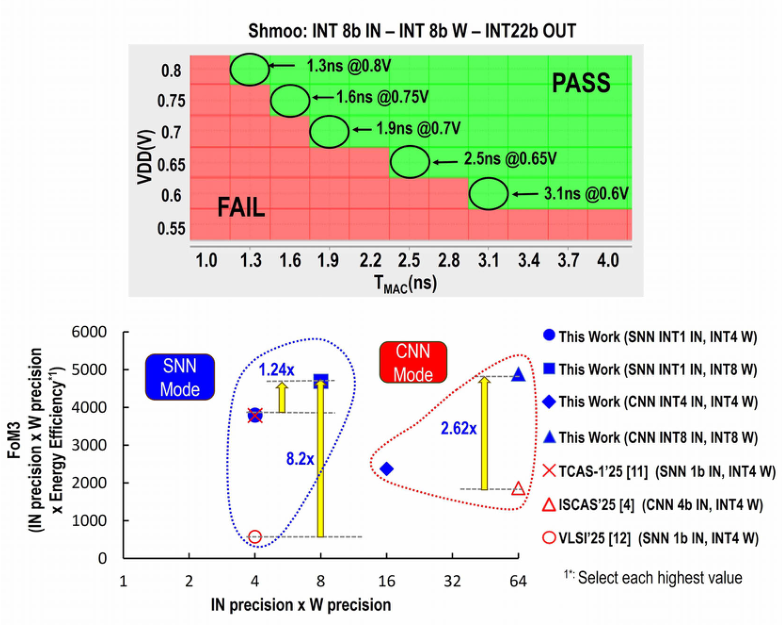
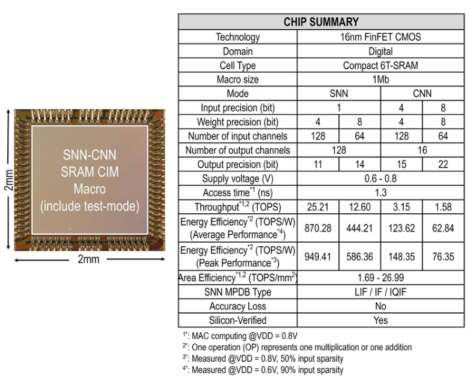
① 能效数字强烈依赖“精度配置”：444 TOPS/W 是 1b 输入，62.84 是 8b 输入，直接比较不同位宽的 TOPS/W 没有意义（这也是论文专门定义 FoM3 = IN精度×W精度×能效 的原因——把位宽“折进”指标里）；② SNN 的“能效”还依赖输入脉冲稀疏度，不同数据集不可直接比；③ 模拟方案能效可能更高，但精度可复现性、工艺可移植性是它们的天花板——要综合看，不能只看一个数。
§9未来研究方向 · 术语表 · 参考资料
9.1 未来研究方向
读完这篇论文，往哪些方向还能继续做？以下是几个有研究价值的方向：
- 在线学习与本地适配：本文是纯推理宏。SNN 的时序特性天然适合 online learning（如 STDP 类规则）。在 CMDM-LCC 里加入“权重就地更新”路径，让宏能边推理边学——但要注意权重更新会破坏 WSC 的“驻留”假设，需要与 PS-WR-ODM 联合设计；
- 更丰富的神经元模型：IF/LIF/IQIF 之外，还有自适应阈值、双指数突触、随机神经元等模型。把 DM-MPDBU 做成“可编程动力学”单元（小处理器/查表），或增加模型库，能覆盖更多 SNN 算法；
- 端到端混合模型编译栈：论文支持“逐层自适应精度/模式选择”，但没有给出自动化的编译器。做一个从 PyTorch 混合模型 → 层标注（SNN/CNN、INT4/INT8、神经元类型）→ 宏配置的编译工具链，是软件-硬件协同的价值洼地；
- 稀疏性与事件驱动的深度融合：SNN 的稀疏红利目前主要靠“输入为 0 自然省电”。如果加法树能显式跳过零 MAC（activation/weight sparsity skip），能效还能再翻几倍——但需要硬件检测电路，要与 CMDM-LCC 的 MUX 乘法器协同设计；
- 多 bank 调度与动态电压频率缩放：16 个 bank 之间如何分配层/通道？能否按 bank 负载做 DVFS？SNN 事件突发时如何调度？这些系统级问题论文没有展开，是很好的补充方向；
- 扩展到更大的混合模型（CNN+SNN+Transformer）：边缘 LLM 时代，混合模型可能还包括注意力层。CMDM-LCC 的“双模式”能否扩展到“三模式”？数据映射的折中思想能否推广到“token × 时间步”的二维遍历？
- 工艺升级与密度提升：16nm → 更先进节点，SRAM 密度和频率都能提升；同时保持“数字可综合”特性，快速移植。也可以探索把宏和 RISC-V 内核做进同一个 SoC，形成完整的边缘 AI 芯片。
9.2 术语表
- SNN（Spiking Neural Network，脉冲神经网络）
- 输入输出为离散脉冲（0/1），神经元膜电位累积到阈值发放；事件驱动、极省电。
- CNN（Convolutional Neural Network）
- 卷积神经网络，稠密乘法累加，精度高。
- Hybrid SNN-CNN Model
- 混合模型：部分层 SNN、部分层 CNN，在精度与能耗间平衡。
- Membrane Potential（膜电位, MP）
- 神经元的累积器，输入脉冲不断累加，撞阈值则发放清零。
- MPDB（Membrane Potential Dynamics Behavior）
- 膜电位动力学行为（积分、泄漏、比较阈值、发放）。
- DM-MPDBU
- 本文的数字多膜电位动力学单元，一套硬件支持 IF/LIF/IQIF 三种模型。
- IF / LIF / IQIF
- 积分发放 / 泄漏积分发放 / 整数二次积分发放——三种神经元动力学模型。
- Timestep（时间步, TS）
- SNN 把时间切成离散步，每步输入一批脉冲。
- BW-IN / WW-IN
- 位宽输入（1b 脉冲）乘法 / 字宽输入（8b 值）乘法。
- CMDM-LCC（Cross-Model Dual-Mode Local Computing Cell）
- 本文的跨模型双模式本地计算单元：两个 MUX 乘法器 + TR + SaA，SNN/CNN 共用。
- TR（Toggle Reducer，翻转缩减器）
- INT8 模式下消除冗余信号翻转的电路，降低动态功耗。
- SaA（Shift-and-Add，移位相加）
- CNN 模式下做字宽累积（8b 输入的部分积按位组合）。
- RIB（Reconfigurable Inference Block）
- 可重构推理块：2kb SRAM + WSC + 8 个 CMDM-LCC + SaA。
- WSC（Weight Stationary Cell）
- 权重驻留单元：让权重留在 SRAM 阵列内，减少搬移。
- CFD-SC-RC
- 本文架构：紧凑全数字 SNN-CNN 可重构计算，共享 MAC 电路。
- PSUM（Partial Sum，部分和）
- MAC 累加的中间结果，需要缓冲存储。
- PS-WR-ODM
- 本文数据映射：PSUM 存储-权重复用优化，按块（block）折中两个极端。
- TS-first / Reuse-first
- 时间步优先（PSUM 小、权重能耗高）/ 权重复用优先（PSUM 大、权重能耗低）。
- FoM（Figure of Merit）
- 综合指标。本文：FoM1=能效/(面积×延迟)，FoM2=精度×能效/(面积×延迟)，FoM3=输入精度×权重精度×能效。
- SRAM-DCIM / SRAM-ACIM
- SRAM 数字存内计算 / SRAM 模拟存内计算。
- Shmoo 图
- 扫描电压-频率（或其他参数对）的功能通过/失败图，用于测量最大工作频率。
9.3 参考资料
- Y.-K. Yeh, J.-W. Su, et al., “A 16nm, 1Mb, 1-to-8b-Configurable 444.21 TOPS/W Fully Digital SRAM Compute-In-Memory Macro for Hybrid SNN-CNN Edge Computing,” ISSCC 2026, Paper 30.8. DOI: 10.1109/ISSCC49663.2026.11409250
- C. Zha et al., “A Reconfigurable Digital Compute-In-Memory Heterogeneous Macro for Differential Frame Convolution and Spiking Neural Network,” ISCAS, 2025. （前作混合方案 [4]）
- S. Kim et al., “C-DNN: A 24.5-85.8TOPS/W Complementary-Deep-Neural-Network Processor with Heterogeneous CNN/SNN Core Architecture…,” ISSCC 2023, pp. 334-335.
- S. Kim, S. Park, B. Na, S. Yoon, “Spiking-YOLO: Spiking Neural Network for Energy-efficient Object Detection,” AAAI 2020, vol. 34, no. 7.
- W.-C. Wu et al., “Integer Quadratic Integrate-and-Fire (IQIF): A Neuron Model for Digital Neuromorphic Systems,” AICAS 2021. （IQIF 模型出处 [9]）
- S. Kim et al., “SNPU: An Energy-Efficient Spike Domain Deep-Neural-Network Processor With Two-Step Spike Encoding and Shift-and-Accumulation Unit,” JSSC, vol. 58, no. 10, 2023. （权重复用映射 [10]）
- K. Park et al., “A 701.7 TOPS/W Compute-in-Memory Processor With Time-Domain Computing for Spiking Neural Network,” IEEE TCAS-I, vol. 72, no. 1, 2025. （时域 SNN-CIM 对比 [11]）
- H. Fu et al., “NeuC-CIM: A 1.3pJ/SOP Neuromorphic Charge-Domain Compute-in-Memory Macro for Spiking Neural Network,” IEEE Symp. VLSI Circuits, 2025. （电荷域 SNN-CIM 对比 [12]）
- H. Fujiwara et al., “A 3nm, 32.5TOPS/W, 55.0TOPS/mm² and 3.78Mb/mm² Fully-Digital Compute-in-Memory Macro Supporting INT12 × INT12…,” ISSCC 2024, pp. 572-573. （数字 CIM 对比 [7]）
- P. Chen et al., “A 22nm Delta-Sigma Computing-In-Memory (ΔΣCIM) SRAM Macro… 21.38TOPS/W for 8b-MAC Edge AI Processing,” ISSCC 2023, pp. 140-141. （模拟 CIM 对比 [8]）